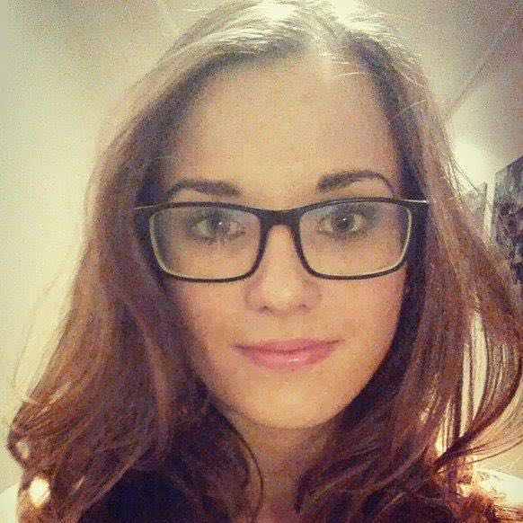

Lea Lapšanská
O mne
 Moje meno vám iste neušlo, ale pre istotu volám sa Lea Lapšanská. Som 19 ročná baba pôvodom spod Tatier. Štúdium ma priviedlo práve do rušnej Bratislavy. Študujem na Fakulte elektrotechniky a informatiky odbor aplikovaná informatika. Úspešne som sa dostala do 3 ročníka bakalárského štúdia. V tomto roku ma čaká povinnosť naviac - bakalárska práca. Bude to webová aplikácia s témou:„Rezervačný systém miestnosti”. Bakalársku prácu robím v spolupráci s firmou Materna. Pevne dúfam, že táto práca bude v praxi plne využiteľná a už čoskoro aj mne pribudne nejaký ten titul pred menom.
Pracujem ako testerka pre firmu ui42. Vo voľnom čase sa veujem prekladu rôznych článkov, predovšetkým z nemeckého jazyka, ktorý je pre mňa aj záľubou. Ak by ste si radi prečítali nejaký môj článok, nájdete ho na stránke FEMMINA. Najradšej však trávim čas so svojou rodinou. Milujem cestovanie, ktoré mi zaručí ten pravý oddych.
Chcete vedieť, ktoré krajiny som už navštívila? Tu je stručný zoznam:

- Švajčiarsko
- Nemecko
- Turecko
- Bulharsko
- Ukarjina
- Taliansko
- Chorvátsko
Moja škola
Poslaním Fakulty elektrotechniky a informatiky STU v Bratislave, ako jednej z najstarších technických fakúlt na Slovensku s bohatou vedeckou a výskumnou činnosťou, je predovšetkým poskytovanie kvalitného univerzitného vzdelávania všetkých stupňov na báze slobodného vedeckého bádania a tvorivej výskumnej práce. Poslanie fakulty v oblasti pregraduálneho vzdelávania spočíva v príprave univerzálne profilovaných a flexibilných absolventov študijných odborov bakalárskeho štúdia s dostatočnou teoretickou i praktickou úrovňou vedomostí a zručností, teda vysokoškolsky vzdelaných odborníkov pre širokú spoločenskú prax.